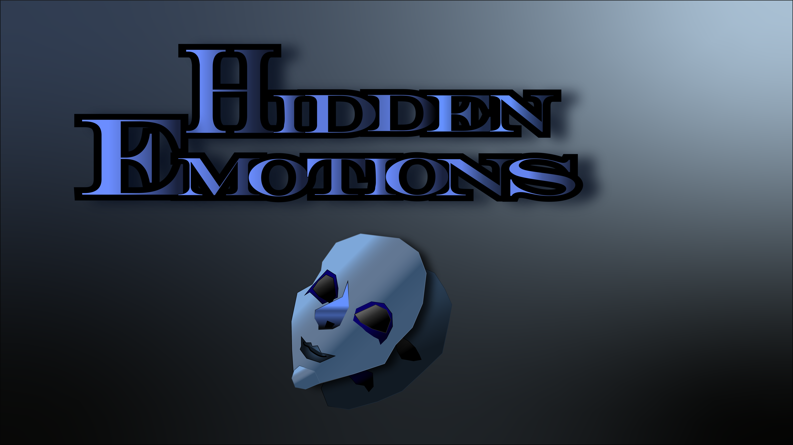
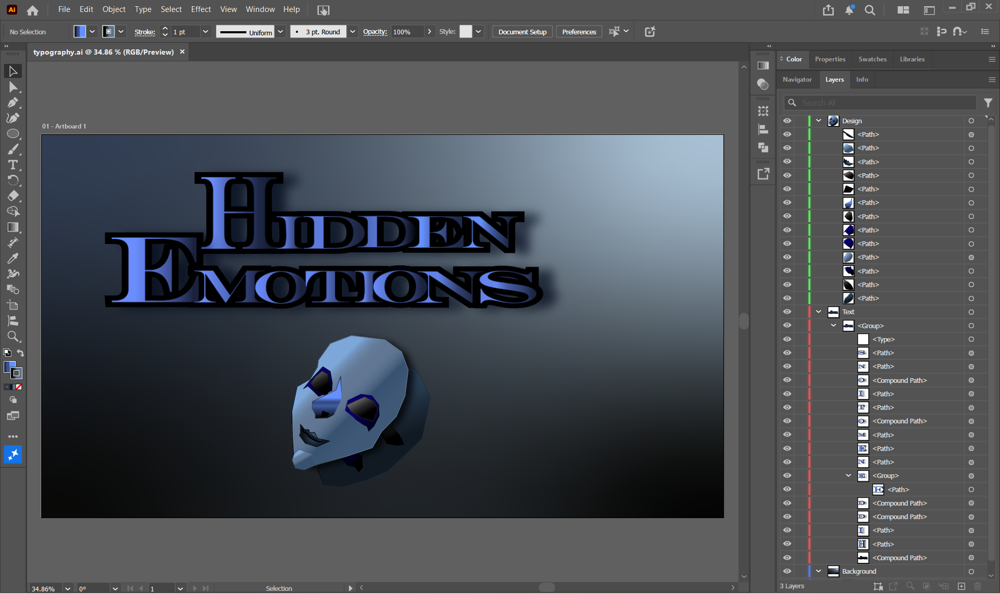

Hidden Emotions


Out of all the assignments I completed, the extra credit was the most challenging. During the process of making my own custom typography for the first time, I arranged it by using the Engravers MT text font, approaching a simpler but elevated design. For the color scheme, I used a more monochromatic and analogous color harmony consisting of muted/pastel shades of blue (#627793, #2d435c, #4f68bd, #26384d), white (#ffffff), cool grey (#A6B1C6), and bluish black (#1E1E22). I used this specific color harmony, because the dark and muted colors help bring the message “Hidden Emotions” clearer. I also design masks using the pen tool, one overlapping the other, displaying the message of the type. In addition, I even played around by using different outlines, effects, and pathfinder methods in making the typography stand out such as offset path, dropping shadow, freeform and linear gradient. The design was inspired by the slides from the lecture on design and pattern and video tutorials from Youtube, where it helped me understand this assignment more. In comparison to my previous work, this assignment helped me further understand the basis of graphic design and how to elevate these skills in using different more efficient techniques, while gaining a lot of experience in such a short time. While the other assignments were easier, the extra credit assignment’s difficulty helped me play with those different methods in making my first ever design. Despite the difficulty and stress in doing typography, it was fun learning the steps.